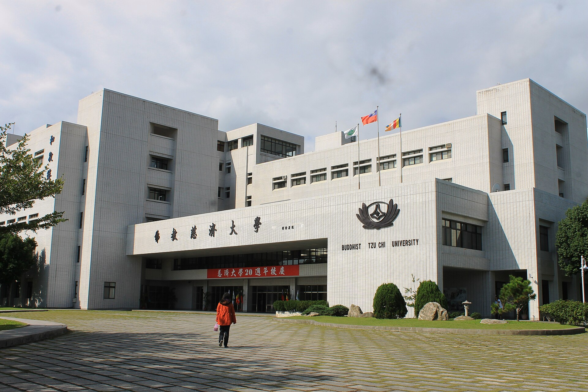
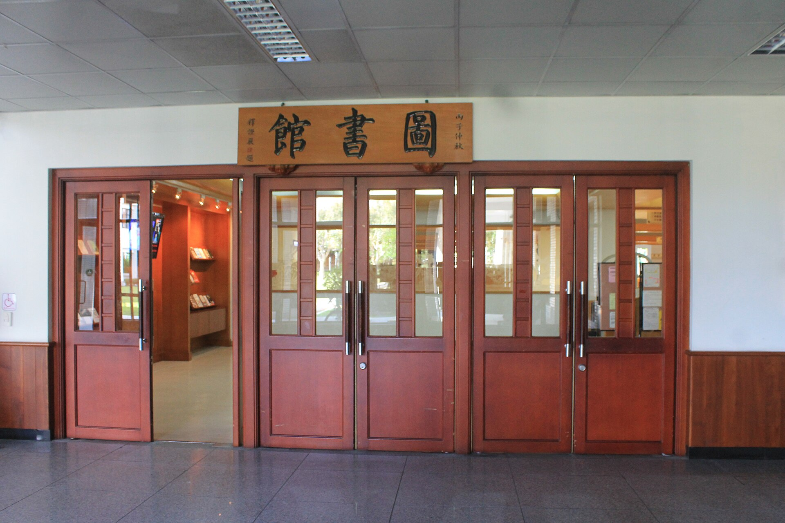
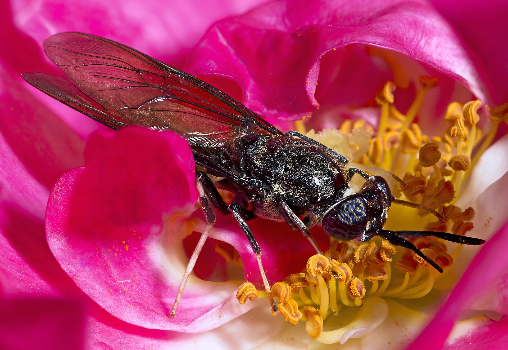

人文素養
從尊重與倫理出發，思考專業的責任。
HUMANITY以人為本的經營管理
DEPARTMENT OF BUSINESS MANAGEMENT
以人文為起點，讓商管專業回應世界。從市場洞察、數位應用到永續經營，將課堂裡的想法，轉化為理解問題與付諸實踐的能力。
OUR PERSPECTIVE
把人，放在每一次決策的中心。

01 / ABOUT THE DEPARTMENT
從尊重與倫理出發，思考專業的責任。
HUMANITY提出不同的問題，探索更好的可能。
CREATIVITY在溝通與協作之間，完成共同目標。
COLLABORATION理解差異，培養與世界對話的能力。
GLOBAL PERSPECTIVE
02 / LEARNING EXPERIENCE
從理解概念、練習方法，到走進場域，讓知識成為能夠運用的能力。
從市場與行銷、流通服務、電子商務到永續經營，探索商業問題的不同面向。
查看各入學年度課規 ↗
透過個案討論、簡報溝通及場域學習，把理解轉化為實際方法。圖書館照片不是本系專屬教室。
認識本系教學特色 ↗
透過專題、實習與跨域學習，累積發現問題、整合資訊及提出方案的經驗。
前往學生實習專區 ↗
學習方向依官方公開介紹整理；實際課程與實習安排，以各年度公告為準。
03 / IDEAS IN ACTION
不只停留在想法，也在真實議題中留下學習的足跡。
瀏覽全部學生作品 ↗
全國專題競賽・第二名從資源再利用切入，探索以黑水虻處理沼渣廢棄物的可能性，連結管理研究與環境議題。
黑水虻主題攝影：Didier Descouens，CC BY-SA 4.0。非該團隊的研究現場。 來源說明
以教育訓練為應用情境，探討生成式 AI 輔助試題設計的可行性。
電腦情境攝影：Pixel.la Free Stock Photos，CC0。非本系課堂或研究系統。 來源說明
04 / YOUR NEXT STEP
給準備認識經管的你，也給正在累積專業的你。